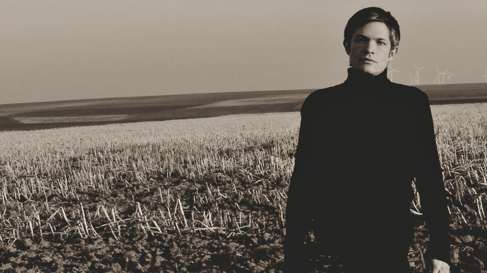
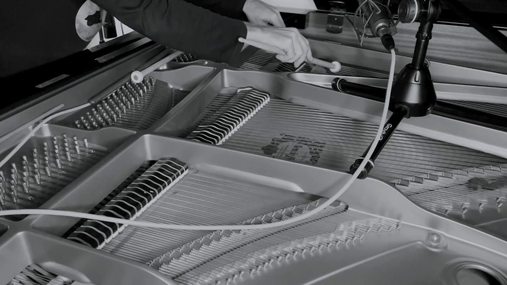
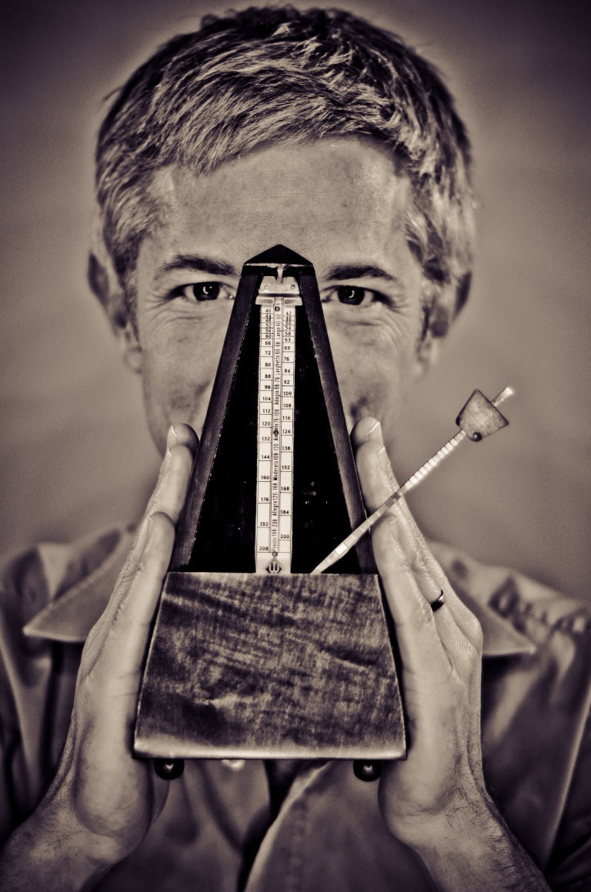
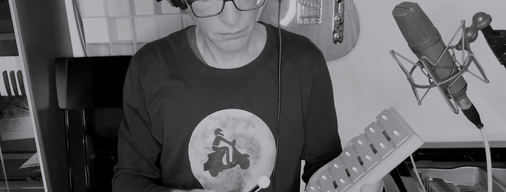

YouTube · Playlist
calm piano music · 2026
The Neoromantic
Being a Neoromantic at heart, I love to compose piano music with minimalist melodies, creating a sanctuary for relaxation, comfort, and deep emotion.

Conceptual Composing.
Storytelling through sound.
“Music stands between thought and the visible world; as a dawning mediator, it stands between spirit and matter...”
— Heinrich Heine
This is one of my favorite ways to compose: using real musical instruments in unconventional ways. What can a drummer do on a violin...?
This composition was inspired by the painting 'Ein nächtlicher Augenblick im Herbst' ('A Moment One Autumn Night'), created by Josef Peter Belgrad in 1907 during his time at the Heidelberg psychiatric clinic. I discovered this striking piece at an exhibition in the Prinzhorn Collection.

YouTube · Playlist
calm piano music · 2026
Being a Neoromantic at heart, I love to compose piano music with minimalist melodies, creating a sanctuary for relaxation, comfort, and deep emotion.
mobile gaming project · 2023
A 3D reimagining of Tetris. The soundtrack pays homage to the original music without copying it, utilizing iconic analog synthesizers such as the Minimoog, Oberheim Matrix-6, and Korg MS-20.
Analog: Electronic & Acoustic Music · 2021
My early influences ranged from French electronic pioneer Jean-Michel Jarre, The Beatles, and ABBA to classical masters like Bach, Beethoven, and Chopin. As an adolescent, I discovered jazz icons such as Bud Powell, Charlie Parker, and Miles Davis. Since then, my musical influences have grown significantly, fueled by a continuous quest to integrate these diverse styles into my own unique musical language. One major milestone of this creative process was this double album, for which I relied almost exclusively on analog gear.
film project · 2013
This was the graduation film of film student Milan Kappen at the KHM Cologne. As the story shifts from a sitcom to a tragedy, I used a wide variety of styles, ranging from electronica to string quartet.

03 / Biography
Christian Maurer has been drumming since childhood, learned the guitar at twelve, and discovered keyboard instruments at fourteen, when he also began composing and singing. After graduating from a classical conservatory and completing an additional degree in jazz studies, his repertoire expanded to span jazz, pop, chanson, Latin American music, electronic music, contemporary classical music, and music for film and games.
For many years, he worked primarily as a highly respected sideman for numerous international artists, both as a keyboardist and drummer. Productions featuring his work have appeared on German television (Arte, ZDF, 3Sat), radio (SWR, HR, Radio Swiss Jazz), on DVD, and on numerous CDs. He also worked for the theatres of Mannheim and Heidelberg, and concert tours have taken him to France, Italy, Belgium, Spain, Austria, Portugal, and Switzerland.
After 20 years of traveling from gig to gig, mental exhaustion forced him to shift his focus, and he became a high school music teacher. During this time, he was finally able to dedicate more time to composing and producing under his stage name, crima. Unfortunately, after another ten years, he also had to give up teaching because the effects of a late-diagnosed neurodivergent disorder became increasingly difficult to mask. So Christian concentrated fully on his work as a composer...

“Only one who to yield entirely to the moment may produce that which no amount of time can destroy.”
— Johann Jakob Mohr
Immersive Music for Film, Games & Media.
I programmed the animations myself to give the tracks some visual flavor, leaving the real cinematic masterpieces to the directors and developers I build this music for.
Dark Acoustic-Electronic
This is an electronic composition based on real instrumental and vocal audio material, which I first recorded and then processed using pitch and tempo tools.
Modern String Quartet
Music has the power to visually and emotionally stretch an experience in time. This piece describes the unwanted experience of orange juice pulp spreading across the mouth with the very first sip. A moment of utter shock is followed by a wave of sadness and existential disappointment. Then comes the brave resolution to swallow the juice anyway, as the pulp slowly clears from the mouth.
Maritime Orchestral Suite
Imagine if Odysseus had left the Mediterranean, sailed past the Pillars of Hercules, and crossed the Caribbean Sea...
Cinematic Post-Rock / Indie
I composed this piece for the very first film I’ve ever scored. It shows off my Indie side. Unfortunately, the original film (Le fumeur sous l’arbre) is no longer available.
Jazz Trio
A minimalist melody that questions its own nature and finally answers with a musical quote from Count Basie. Song of the Week on Radio Swiss Jazz in 2009 and also broadcasted on the German radio like SWR and HR.
Nostalgic Orchestral
A nostalgic dedication to the 19th century. It may have been part of Tchaikovsky's Nutcracker Suite...
A curated selection of musical projects I’ve created, shaped, or contributed to over the years.
Album / nytingalemusic
The "In" Crowd
2026
drums, composingAlbum
3 +
2026
percussionAlbum
crima
2025
Full productionAlbum / KübelRecords
Huub Dutch Duo
2025
Mixing, DrumsAlbum
Emajamaa
2024
drums, composingDouble Album / Rodenstein Records
crima
2022
Full Production (except violin, cello and saxophones)Album / Castle Road Records
crima
2021
Full productionAlbum / KübelRecords
Huub Dutch Duo
2018
Mixing, PercussionAlbum
Tête-A-Tête
2014
piano, vocals, recording, mixingAlbum / Castle Road Records
Peter Schnur, Gernot Kögel, Christian Maurer
2009
drums, recording, composingAlbum
Tête-A-Tête
2009
piano, vocals, percussion, guitar, recording, composingAlbum / Ears Love Music
Andrea Reichhart
2008
pianoAlbum
Thomas Haag
2007
keys, producing, drums, bass, recordingAlbum
Amini
2007
keys, vocals, composing, guitar, percussion, recording, mixingAlbum / JAZZ’n’ARTS
Andrea Reichhart
2004
piano, vocals, percussionAlbum
Tête-A-Tête
2004
piano, vocals, percussion, guitar, recording, composingDVD (Album) / Naidoo Records
Xavier Naidoo
2004
keys, guitarAlbum
Ulli Rollshausen & Christian Maurer
1999
piano, vocals, drums